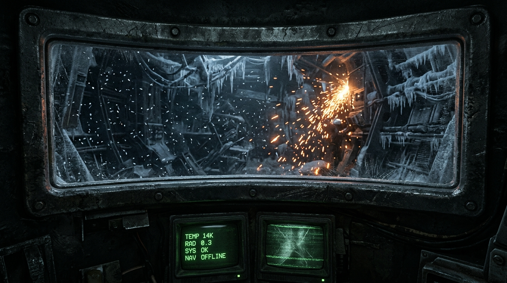
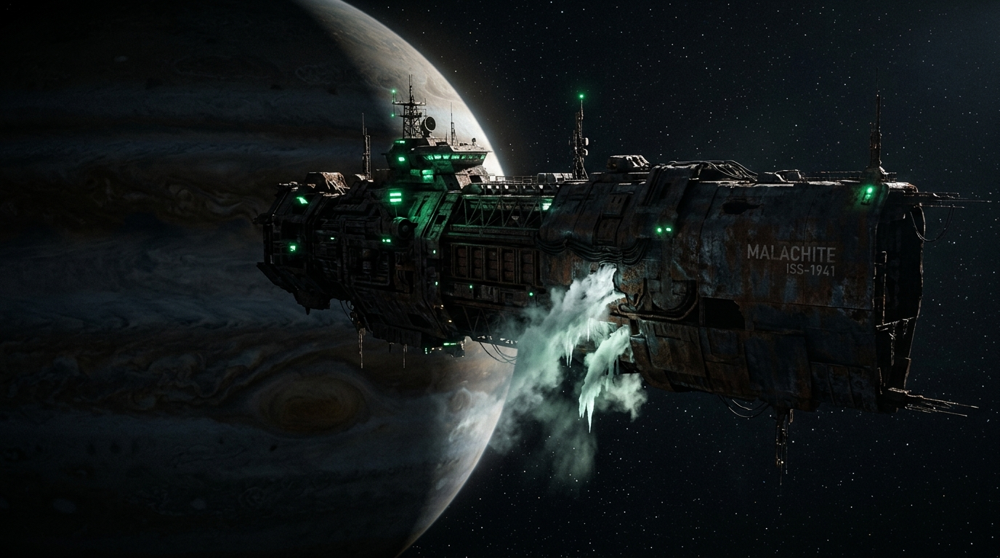
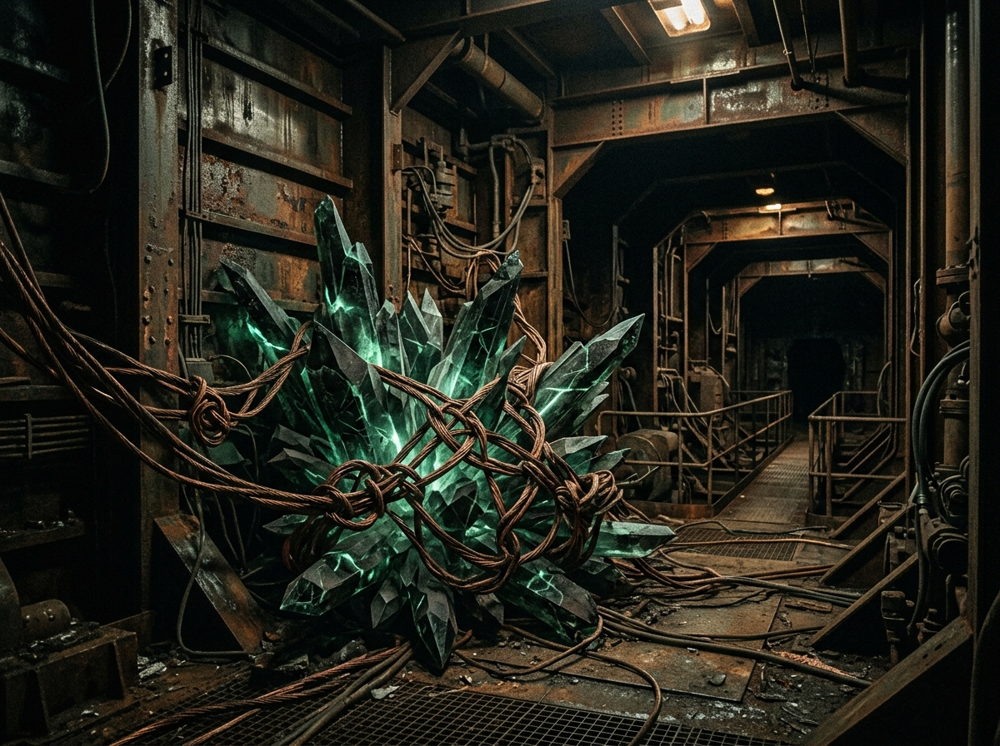

Displaced Gaze
Regard déplacé
The Third Millimeter is Chapter 01 of The Silent Running. This page lets you feel its hardest idea: looking out through three millimeters of iron — or parking your sense of “I” in a camera nodule on the suit.
The Third Millimeter est le chapitre 01 de The Silent Running. Cette page vous fait sentir son idée la plus dure : regarder à travers trois millimètres de fer — ou garer le « je » dans un nodule caméra sur la combinaison.
- What it is — a short interactive feel of the Slot ↔ camera cut from Chapter 01.
- What it is not — not another novella. Not the Cairn-9 dossier.
- Why — so the book’s hardest idea becomes a feeling before you read (or after).
- Ce que c’est — une courte sensation interactive de la coupe fente ↔ caméra du chapitre 01.
- Ce que ce n’est pas — pas une autre novella. Pas le dossier Cairn-9.
- Pourquoi — pour que l’idée la plus dure du livre devienne une sensation avant (ou après) la lecture.
Stay in the Slot. Feel how little world three millimeters gives you. Then displace.


You are thirty centimeters above the right shoulder. Helmet and spike driver align on airlock teeth. Meat is elsewhere.
Vous êtes trente centimètres au-dessus de l’épaule droite. Casque et pique s’alignent sur les dents du sas. La viande est ailleurs.
Non-periodic lattices under plating. Zinc film. The deck is listening for structured thought.
Réseaux non périodiques sous le plancher. Film de zinc. Le pont écoute la pensée structurée.

Looking back at the Mark-IV tumbling in Jupiter’s shadow. Inside: body at near absolute cold. This is the tow view from the novel’s later drift.
Regard en arrière sur le Mark-IV en rotation dans l’ombre de Jupiter. Dedans : le corps presque au zéro absolu. Vue du remorquage plus tard dans le roman.
Gaze perspective
Perspective du regard
Thermodynamic quiet. Mind flattened. Invisible to ambient sensors.